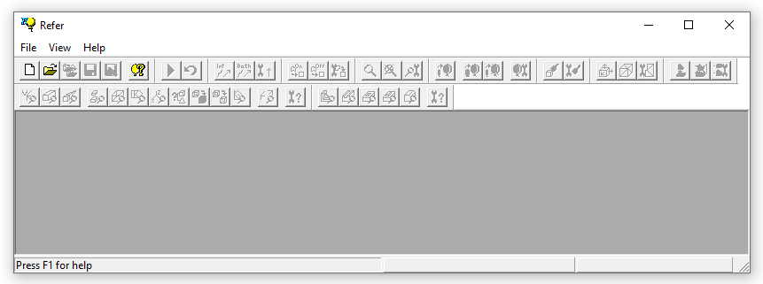
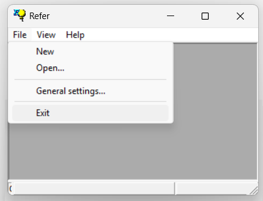

1.5 Getting Started
1.5.1 Getting Started
After installing REFER, you can run the executable file Refer.exe to launch the application.
Once the program starts, the main window (or parent window) will automatically open, as shown in the figure below(1):

The parent window contains a set of menus, as well as different types
of child windows.
Use the main menu to begin the input process. Select new to start the creation of a new hand-drawn sketch. Alternatively, select open to use a previously created REFER file.
Once the desired sketch or line drawing is created, the system can interactively produce the corresponding 3D model through the reconstruction flow.
To exit the application, simply click the Exit button.
Alternatively, you can close the current file.
IMPORTANT! REFER is not designed as a commercial application but as a laboratory of ideas. As such, it is not optimized for delivering the quickest solution. Instead, it requires users to interact with various dialogs to configure the application parameters and find the most suitable solution for each example.
NOTES:
(1) The first time REFER is launched, the About dialog will be automatically displayed.